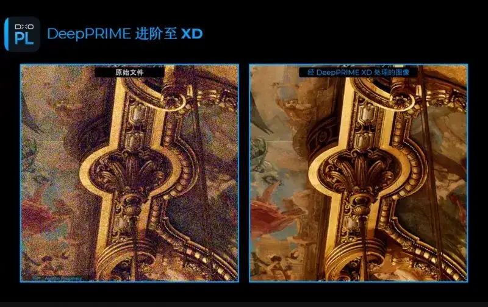
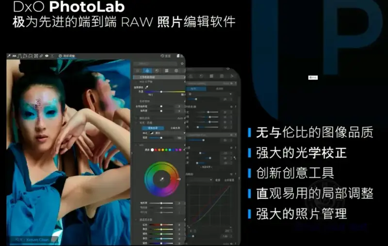

Published: 2022-10-13
Source link: https://www.cnphotos.net/academy/show-100.html
Beyond the new DeepPRIME XD noise reduction, this major new release adds advanced color management, a wide working color space, powerful new editing tools, and improvements to the simple and elegant library system.

Paris, France: DxO Labs, the company behind modern RAW processing and lens correction, today announced that its flagship RAW editing and workflow software DxO PhotoLab 6 is now available. The new version uses DxO DeepPRIME XD, an AI-driven RAW conversion that pushes beyond noise reduction and detail enhancement. It brings a new color management system with an expanded working color space, new editing tools that redefine what photographers expect, and an upgraded library for easy organizing and fast access to images.
DxO DeepPRIME technology upgraded
Professionals have long regarded DxO DeepPRIME as an outstanding tool for noise reduction and detail enhancement. DxO PhotoLab 6 now adds a new DeepPRIME XD (eXtreme Details) mode that further raises the quality of RAW files. It suits high-ISO images, removes noise, recovers detail that was previously invisible, and restores vivid, natural color.
DeepPRIME XD uses a neural network trained on billions of image samples and gives photographers more than 2.5 stops of gain. For example, an image shot at 4000 ISO comes close to one shot at 500 ISO in noise, color, and clarity. Because it is the basis of RAW conversion, DeepPRIME XD can even extend dynamic range, giving more flexibility for low-light shooting. The original DeepPRIME mode remains for faster enhancement or images that need few adjustments.
We were satisfied with DeepPRIME in DxO PhotoLab 5, but we knew we could do more, said Jean-Marc Alexia, DxO vice president of marketing and product strategy. The new DeepPRIME XD was developed over a year, and the AI was in effect self-learning how to do the job better. The results speak for themselves.
More accurate color for better images
DxO PhotoLab 6 adds a redesigned color processing engine that pushes beyond color management, with a new expanded working color space. A soft-proofing mode supports these, to ensure accuracy across the workflow, so photographers can adjust for how the photo is reproduced, whether on a high-definition screen or as an art print.
With this upgrade, even the most saturated colors are reproduced truthfully, and photographers can make the most of the latest monitors and printers.
New tools for stronger editing
DxO PhotoLab 6 adds a new ReTouch tool that extends healing and cloning far beyond other RAW software. Photographers can now transform the source by mirroring, rotating, and scaling, or use a brush to refine the edited area into a more accurate shape. The new tools reduce the need to do complex cloning and healing outside DxO PhotoLab, speed up the workflow, and keep edits tied to the original RAW file, so they stay lossless.

A refined library for a smarter workflow
DxO PhotoLab 6 builds on its simple but powerful library. It expands Exif and IPTC tags, adds nesting to projects, and introduces color labels to manage files more easily, all without a clumsy, time-consuming catalog.
Comprehensive and precise lens and camera profiles
At the core of DxO PhotoLab 6 are DxO's pioneering optical modules. About 20 years ago DxO patented the concept of lens correction, and since then the analysis done in its dedicated lab has set the standard for digital photo editing. The quality and precision of DxO optical modules remain unmatched, in part because we test lenses and cameras as a set, giving photographers profiles tailored to their gear. All the latest modules download automatically to DxO PhotoLab 6, ensuring you get the best possible quality every time.
Price and availability
The ESSENTIAL and ELITE editions of DxO PhotoLab 6 (Windows and macOS) are now available for download from the DxO site (https://shop.dxo.com/zh-cn). Prices:
DxO PhotoLab 6 ESSENTIAL: 973 yuan
DxO PhotoLab 6 ELITE: 1533 yuan
Special upgrade prices for owners of DxO PhotoLab 4 or 5:
Upgrade to DxO PhotoLab 6 ESSENTIAL: 525 yuan
Upgrade to DxO PhotoLab 6 ELITE: 693 yuan
To upgrade, customers must log in to their account at https://shop.dxo.com/zh-cn/customer/account/login/referer/aHR0cHM6Ly9zaG9wLmR4by5jb20vZnIvbGljZW5zZS9hY2NvdW50L2xpc3Rpbmcv/.
DxO PhotoLab needs no subscription. The ESSENTIAL edition installs on up to two computers, and the ELITE edition on up to three.
A full one-month trial of DxO PhotoLab 6 is available at https://www.dxo.com/zh-cn/dxo-photolab/download/.
About DxO PhotoLab
Evolved from DxO Optics Pro nearly 20 years ago, DxO PhotoLab is a complete RAW processor. It won the EISA 2020-2021 best photo software award and, for the third year running, the 2022 TIPA best imaging software expert award. Its standout features include: a leading RAW engine with DeepPRIME XD for detail enhancement and noise reduction; unmatched optical correction built on cutting-edge analysis in DxO's dedicated lab; and the use of DxO's U Point™ technology for local adjustment; ClearView Plus to quickly remove haze, mist, and smog; and the library, a refined and smooth file navigator and image management system; and more.
About DxO Labs
DxO Labs is one of the most innovative companies in photography and image processing, building powerful, versatile software for professionals and enthusiasts. Besides DxO PhotoLab, it offers the well-known creative plugin suite Nik Collection for Adobe Photoshop®, Adobe Lightroom Classic®, and DxO PhotoLab. It also makes DxO FilmPack, which reproduces the look of classic analog film, and PureRAW, which gives photographers a RAW conversion engine that removes noise, corrects lens defects, and optimizes color and detail.